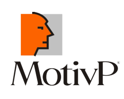

I am a psychology student, currently focused on writing my thesis. However, my passion for helping people has always pushed me to explore beyond the limits of my field. 🧠💬 For the past year, I've been honing my skills in customer support and banking, offering clients guidance on their financial matters and ensuring their security. Yet, I have long felt the pull of something bigger—something that challenges me further. 💼
In my free time, I've turned to software development. 💻 I began learning Python and Java, and I'm gradually immersing myself in the world of coding and web development. Each project I tackle, I do with great attention to detail and the drive to produce high-quality work. 🔠The more I learn, the more I realize that this is my true calling. 🚀
This career shift feels natural to me. I believe that combining my background in psychology and my passion for technology and problem-solving will lead to even more fulfilling opportunities. 💚 I’m excited to bring my skills to roles in IT testing or development. You are looking at my personal web right here. 🎯
Každý den se zaměřuji na to, abych klientům nabÃdla to nejlepÅ¡Ã řešenà – nejen pro bankovnà produkty, ale i pro bezpeÄnost jejich účtů a financÃ.
Každý den jsem komunikovala s klienty a pomáhala jim najÃt řešenà pro jejich bankovnà záležitosti.
Byla jsem jejich „prvnÃm kontaktem“, ujistila se, že jejich požadavky byly vyÅ™Ãzeny správně nebo předány do šikovných rukou kolegů, a že jejich zkušenosti s bankovnÃmi službami byly co nejhladÅ¡Ã. 😊

MotivP
HR specialista
Od březen 2022 až do prosince 2022.
📠Telefonická i pÃsemná komunikace s klienty a kandidáty – vždy s cÃlem najÃt to nejlepÅ¡Ã řešenà pro obě strany.
Aktuálně mě zajÃmá rozvoj v oblasti testovánà softwaru Äi vývoje aplikacÃ. Ráda se s Vámi mrknu na spolupráci, kde bych pro Vás byla pÅ™Ãnosem na pozici testera nebo junior developera. Sice se mám ještě hodně co uÄit, ale jsem přesvědÄená, že je dnes Äasto znamenitějÅ¡Ã mindset než skillset.